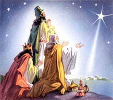
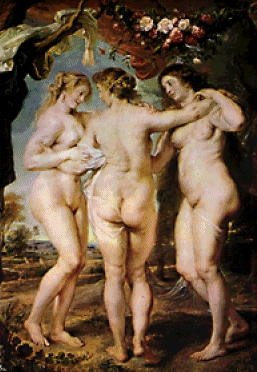
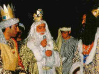

Reyes Magos
 De: La Frikipedia, la enciclopedia extremadamente seria.
De: La Frikipedia, la enciclopedia extremadamente seria.
 ¡¡¡La estrella de mierda nos mintió!!! Los Reyes Magos son tres extraños personajes enviados por Bin Laden, que cada noche del 5 de enero traen a los niños la Playstation, el móvil de última generación o el juguetito de moda (Aunque a veces no te traen ni mierda de lo que pediste.) Se llaman Michor, Rascar y Basaltar.
Viajan a lomos de unos extraños animales con joroba, que también aparecen en la saga de Star Wars.
Además de usar un sombrero muy rídiculo Melchor tiene ideas deescabelladas pues fue el único que le llevo al niño Jesús un regalo digno de un rey, mientras que los otros dos solo fueron de gorra y regalaron lo primero que se les vino a la cabeza (obstruida por ese ridículo gorro).
El archienemigo de los SSMM los Reyes de Oriente es Papá Noel.
Además, cabe destacar, que son los seres que menos trabajan en todo el mundo, sólo una vez al año y encima es mentira.
Entrevista a los RRMM
 Las esposas de los RRMM les dispensan cada mañana del 6 de enero una
calurosa bienvenida...
- Jo Jo Jooo... Feliz nav... estoo... Buenas, señores, sientense, póngasen cómodos, ¿qué tal el viaje?
- Melchor- ¡Qué te jodan!
- Gaspar- Tranquilízate Mel, este simpatiquillo hombrecillo regordete solo nos quiere hacer una entrevista. Nuestro viaje ha ido bien... un poco cansados y con la entrepierna hecha un mixto de los miles de kms que hemos hecho encima de un bisho con jorobas mal puestas...
- Jo jo j... mmm vaya, ¡pués empezemos! (sudor, temblor por la frente)
- Melchor- Mmm... no sé... su cara me suena de algo...
- Bueno... pués vayamos al grano, ¿cómo es la vida de un rey mago?
- Melchor- Me cag...
- Baltasar- Mel... yo contestare por tí. Pués es apasionante, tenemos 363 días de vacaciones al año, lo malo es que no tenemos nada de comer ya que no recibimos nómina, y la comida que nos dejan los críos es un asco, venimos del desierto, ¿y qué nos ponen? Mantecaos con leche... anda y que les zurzan...
- Bien... ¿y cómo lograis sobrevivir entonces?
- Gaspar: Verá, como somos reyes... y encima magos, hacemos aparecer dromedarios y una barbacoa... y nos covijamos en la bodega de los bourne, y allí como ratas nos ventilamos una docena de barriles (risas). Creo que la borrachera que cojí aquel 12 de Junio del 76 me sigue durando... y lo peor son las resacas (cara de dolor).
- Eh... bien, ¿les gusta esto de ser reyes magos, y de regalar juguetes y crear sonrisas en los niños del planeta?
- Melchor: No.
- Gaspar: Ehm... no.
- Baltasar: Esto... No.
- ¿Entonces si no les gusta el trabajo por qué siguen?
- Gaspar:Porque mientras haya competencia no nos rendiremos...
- Se refiere a...?
- Gaspar: Si... exacto.
- A... ¿Bill Gates?
- Melchor:(cara de furia y pestañeo excesivo)No te fastidia, ¿ahora nos vacilas? Me cago en tu m...
- Baltasar: ¿Tranqui tronco, que no nos vacila, te has tomado las pastillas que te recetó Dr. Dolittle?
- Melchor: No... desde la tercera parte... ya no trabaja...
- Señores, centrémonos, bien, Baltasar... ¿Cuándo empezastes con esto de ser rey?
- Baltasar:Cuando mi papaito murió... (cara de tristeza) (llantos).
- No llore, hombre, piensa que ahora estará en un mundo mejor.
- Baltasar: Yo te mato hijo de la gran...
- Ey no se sulfure, que se lo digo con todo el cariño del mundo... Bueno, ¿y dónde tienen ustedes su base super secreta de juguetes?
- Melchor: Pues, llendo recto hacia arriva, doblando hacia abajo, a mano izquierda, un poco más a la derecha, congiendo la nacional, y en el desvio pa alcaucín, cojiendo la comarcal 320 hacia el polo norte.
- ¿Allí no es donde trabajo yo?... digoo... ¿trabaja Santa Claus?
- Gaspar: Mmm... (mirando de reojo)... no... el trabaja en china.
- ¿China?
- Gaspar: Si, ¿de dónde crees que salen tantos juguetes?
- Pero eso no es escusa, siempre se ha sabido que trabaja alli, en el culo del mundo.
- Baltasar: Eso es un bulo hombre, trabaja en china, que lo se yo de buena tinta...
- Bueno, ¿y ustedes de donde sacan tantos juguetes?
- Gaspar: Esto... ¿que no salga de aqui eh?
- No no tranquilos... jej... jejeje... JUAAAJAJAJAJ (risa diabólica), bien, diganme...
- Gaspar: Todos los días vamos a china a por 100 niños que nos fabriquen juguetes allí, en el casquete polar, y de regalo por su increíble trabajo, le damos un helado de nata.
- Oh... excelente... JUAJAJJAA (risa diabólica) Bien... pués nada... ya pueden irse.
- Melchor: ¿Oiga como se llama?
- Santa... Santapedro Ruíz De La Trinidad de Los Dolores.
- Gaspar: No me suena... bueno, encantado de conocerle.
- Lo mismo digo, ha sido un placer sonsacarles información.
- Melchor: ¿Eh? ¿Sacarnos que?
- Eh... no, nada, he dicho realizarles la cuestión (sudores por la frente).
- Melchor: Mmm... vale (risas)
- RRMM y el entrevistador: (risas)
- RRMM:(risas diabólicas)
- RRMM:(disparos)
- Baltasar: Ya decía yo... que su barba blanca y su traje rojo me sonaba de algo y era muy llamativo...
- Melchor: Guardemos la pipa... ya mismo llegará la pasma...
Los Poderes de los Reyes Vagos y Otras Cosas
- Fueron otorgados por Steven Seagal (el salvador) cuando un día le dijo a su hijo bastardo (Chucky) que le iba a dar una barbie
- Los Vagos Reyes fueron a clonarse con la ayuda de Obi-Wan-Juanobi donde les dijo que en zona Rosa iban a clonarse (en realidad salieron violados
- El país de las franjas y donde tienen al Cuau intentó atacar a los Vagos cuando estaban en Japón pero fallaron y por eso cayó la bomba sobre los chinos por vender piratería
- Gracias a ellos se crearon la muñecas inflables a causa de los largos viajes
- Edge quería el título de pesos pesados de la WWE pero Batista le cayó a su cama a partir de la tercera repisa
 Los Reyes Magos también animan fiestas de cumpleaños
¿Sabías que...
- ...se clonan miles de veces, y se ponen en la alameda del Distrito Federal, para sacarse fotos con los niños, para despues con ese dinero comprarles juguetes a los niños?
- ...los nombres verdaderos de los Reyes Magos son Malechor, Hurtar y Va-Asaltar?
- ...desconfían tanto de ti que nunca se toman lo que les dejas?
- ...son tan silenciosos como Splinter Cell?
- ...trabajan menos que los funcionarios?
- ...sus únicos días laborable son el 5/6 de enero y el día de las cabalgatas?
- ...tienen clones suyos por todo el planeta?
- ...los supuestos camellos son Terminators T-800?
- ...ahora mismo te observan desde tu entrepierna?
- ...en sus vacaciones se distraen tocando cuartertos de pedo?
- ...Los reyes magos también se consideran como "Los Reyes Vagos"?
- ...sus mujeres quieren ponerse buenas pero los RRMM nunca le regalan un vale para decoración dermoestética?
- ...los padres no existen?
- ...Baltasar es blanco pero se pinta?
Autor(es):
- Krusher
- Nexo
- Fordus
- Bill Gatos
- Hari Seldon
- Doctor grijander
- MURO DE AGUAS
- Praedos
- Roms
- Guilfer
Frikipedia 2005-2016, Licencia
GFDL 1.2 - Extraído por FrikiLeaks